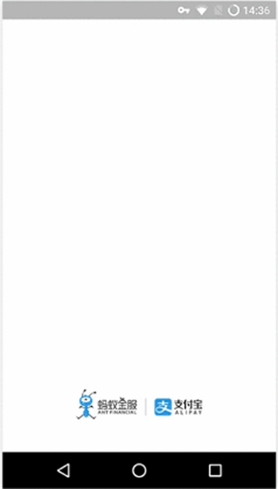
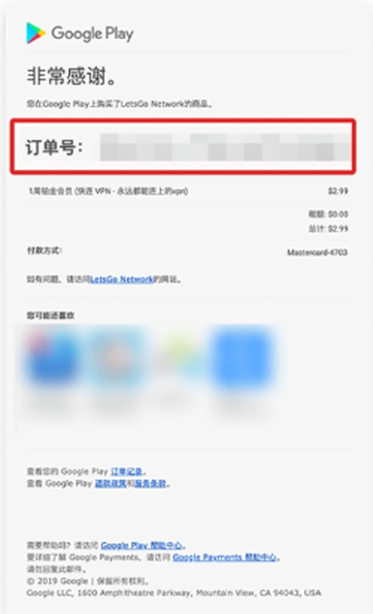
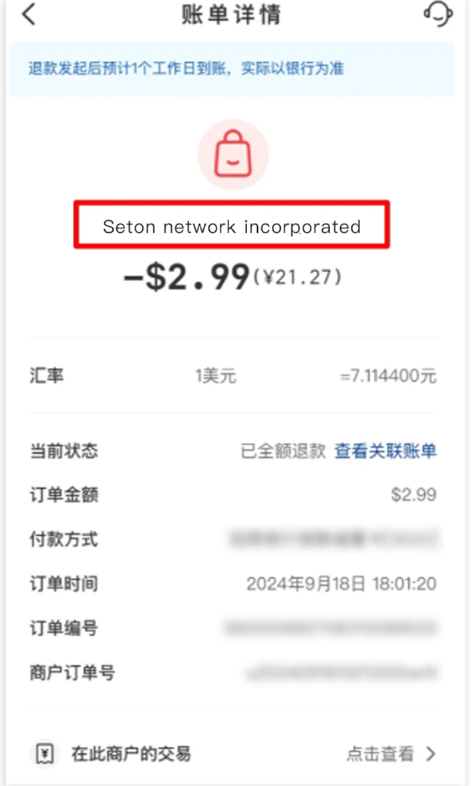
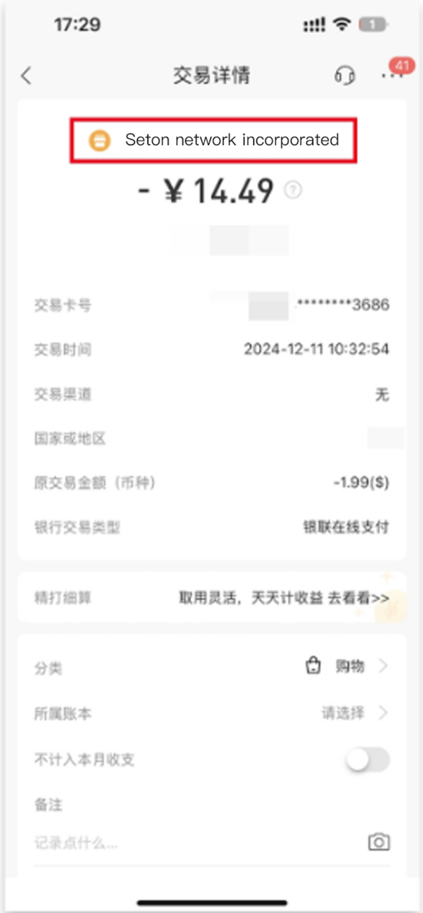
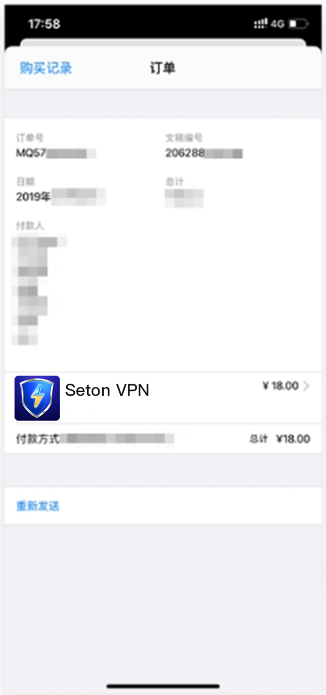

返回
欢迎查看常见问题
智慧服务，让您使用更简单

如何查找赛盾 VPN 支付详情信息
这里有赛盾VPN 支持的所有支付渠道的账单详情查询方法
在牵扯到用户缴费、账户等一些操作的时候，往往都需要您发送支付详情的截图，这里我们列出了 赛盾VPN 支持的所有支付渠道如何获取这个支付详情的方法。您可以根据您自己的需要查阅相关支付平台的说明。
支付宝
我们需要账单详情中的“商家订单号”来确认您的支付与哪个账户关联。

1.请在支付宝客户端中“我的”项目中，进入“账单”当中;
2.在列表中查找与“Seton Service”相关的支付记录;
3.然后请打开具体的账单详细界面截屏即可
谷歌支付
我们需要您的“订单号”才能知道您的支付与哪个账户关联。

由于 Google Play 本身的限制，您无法在Google Play 的网站和 App 中看到任何账单的详细情况，只能获取账单的产生时间和金额。而这些内容无法帮助我们进行支付记录的定位。
您需要在您 Google Play 的注册邮箱中查找与“Seton Network”相关的支付记录，在您支付后的通知邮件中您可以找到具体的“账单号”
VISA / Master Card
若您添加银行卡的方式进行了支付，请您提供一下支付银行卡的后四位数字。
另外，因为牵扯的银行较多，我们并不知道如何能够快速在您的银行系统中找到与我们相关的支付记录。但是请找到，并且截图具体的这条支付记录。
我们将通过您的银行卡后四位数字和您支付的时间、金额来确认您的支付与哪个账户相关。
银联支付
安卓设备银联支付:
在安卓设备使用银联支付过程中，银联会让你输入一个邮件地址。我们需要这个邮件地址和您银联支付的具体时间与金额的截图来关联您是支付到哪个账户当中的。
PS:若在支付过程中您没有输入邮件地址，或者您忘记了当时输入的邮件地址，我们将无法帮助您通过银联找回您以前支付的账户。
官网银联支付:
我们需要账单中的“支付银行卡的后四位数字”来确认您的支付与哪个账户关联，您可以透过以下两种方法查询银联支付纪录。
云闪付App:

1.请在云闪付App 选择“我的”，进入“我的账单”当中;
2.在列表中可进行筛选，查找与“seton Network”相关的支付记录
3.然后请打开具体的账单详细界面截屏即可
支付银行App:

1.打开支付银行App，找到“查找帐单”的功能
2.在列表中可进行筛选，查找与“Seton Network”相关的支付记录
3.然后请打开具体的账单详细界面截屏即可
Apple支付 :
使用 Apple 购买成功之后，Apple 会给您发送一封带有支付收据的邮件，您需要提供如上图所示图片。如果您没有收到邮件，您通过下面步骤联系苹果重新给您发送。

1.点击手机设置→iTunes Store 与 App Store
2.轻点您的 Apple ID，然后轻点“查看 Apple lD”系统可能会要求您使用 Apple ID 登录。
3.向上轻扫到“购买历史记录”并轻点它找到带有seton 相关的购买项目点击然后选择最下方的重新发送即可。
注:若您在下载和使用过程中有任何问题，您随时可以发送邮件给 {{kfEmail}}，将由专业的客户服务人员帮助您获取到最新版本的软件。